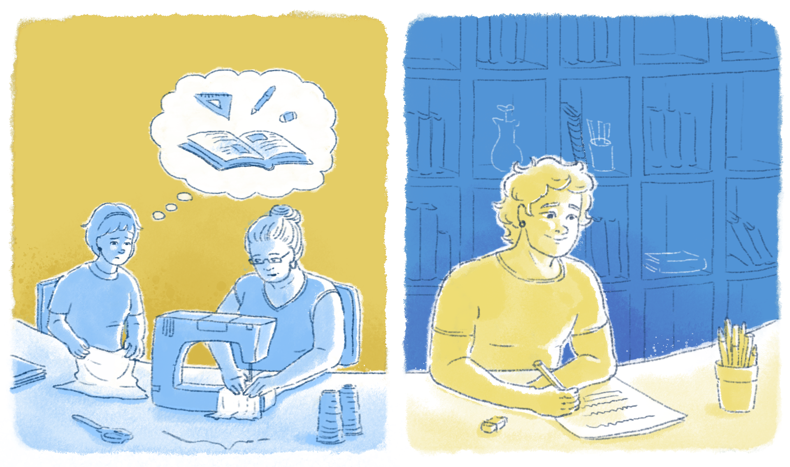

O que vem a ser o trabalho como princípio educativo?
Partimos da noção de trabalho de Karl Marx, o qual o entendia como a transformação da natureza pelo ser humano e, consequentemente, dele próprio, sendo o resultado de diversas mediações no contexto das relações sociais desenvolvidas ao longo da história. Ou seja, o trabalho
[...] é uma condição da existência humana independentemente de qual seja a forma de sociedade; é uma necessidade natural eterna que medeia o metabolismo entre o homem e natureza e, portanto, a própria vida humana.
Por conta dessa compreensão, surgiu a noção do trabalho como princípio educativo, integrante de propostas educacionais comprometidas com o desenvolvimento pleno e integral das capacidades humanas. Logo, se dotadas dessa formação integral, as pessoas podem ter melhores condições de alcançar sua emancipação e autonomia para produzir a sua realidade material e social, entende-se que elas também poderão ser capazes de compreender a realidade em que vivem na sua totalidade e a complexidade das inúmeras determinações das condições materiais da existência humana ao longo da história.
Sem dúvida, pessoas plenamente desenvolvidas em todas as suas capacidades são imprescindíveis para uma vida social do bem-viver.
Estamos, então, falando de uma educação comprometida com a transformação social, aquela que considera a formação crítica dos sujeitos, que leva em conta seus interesses e que pode contribuir para a construção de visões de mundo e de realidades mais promissoras para a vida humana e para a sobrevivência do próprio planeta.
Entendemos, porém, que a transformação da realidade social existente implica, necessariamente, a compreensão de cada um quanto às contradições em meio às quais vivemos.
Para tanto, a educação precisa estar dotada de compromisso social e político com essas mudanças, pois elas não são automáticas ou espontâneas. Um aspecto crucial desse processo é, então, o desenvolvimento do pensamento reflexivo, crítico e criativo dos estudantes. Como podemos fazer isso?
Certamente, por meio de conceitos e de práticas também comprometidas com a problematização e com a mudança da realidade, o que supõe lançar mão de referenciais científicos, políticos, culturais e sociais.
.png)
Título: O pensamento reflexivo, crítico e criativo dos estudantes
Fonte: Prosa (2024b).
Ciavatta e Ramos (2011) esclarecem que a concepção de educação pautada no trabalho como princípio educativo não implica ser necessariamente profissionalizante, mas requer que ela integre as dimensões do trabalho, da ciência e da cultura.
Mas, veja: quando se aborda o Ensino Médio do sistema educacional brasileiro, o que nós verificamos?
Você possivelmente concordará que há predominância de jovens e adultos da classe trabalhadora sem oportunidades de ter uma educação básica bem alicerçada para enfrentar a vida na atual sociedade complexa, que lhes possibilite dar continuidade aos seus estudos e realizar seus objetivos profissionais.
Isso nos traz questões importantes sobre as quais temos que estar atentos na nossa atividade como profissionais da EPT:
Como – e por que – os processos educacionais também promovem (e até aprofundam) assimetria das classes sociais? Quais interesses estão implicados no que chamamos de “dualidade estrutural da educação”?
O fato é que os jovens e os adultos da classe trabalhadora têm sido colocados à margem de políticas educacionais públicas de qualidade e de continuidade dos seus estudos. Isso porque, por conta da estrutura social classista que se reproduz na configuração dualista da educação, os conhecimentos e as riquezas materiais produzidos socialmente não são distribuídos de forma igualitária. Ao contrário, são controlados e apossados pela classe que detém os meios de produção, enquanto aos trabalhadores resta o conhecimento manual, técnico-operacional e parcial do processo produtivo.

Título: As diferentes condições de estudos
Fonte: Prosa (2024c).